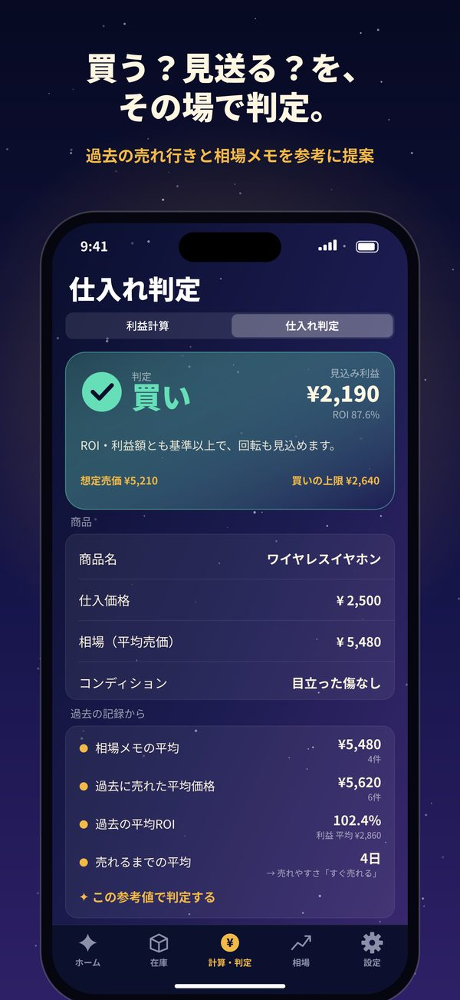
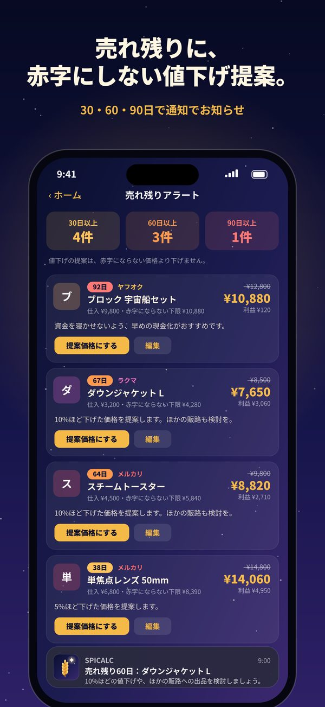
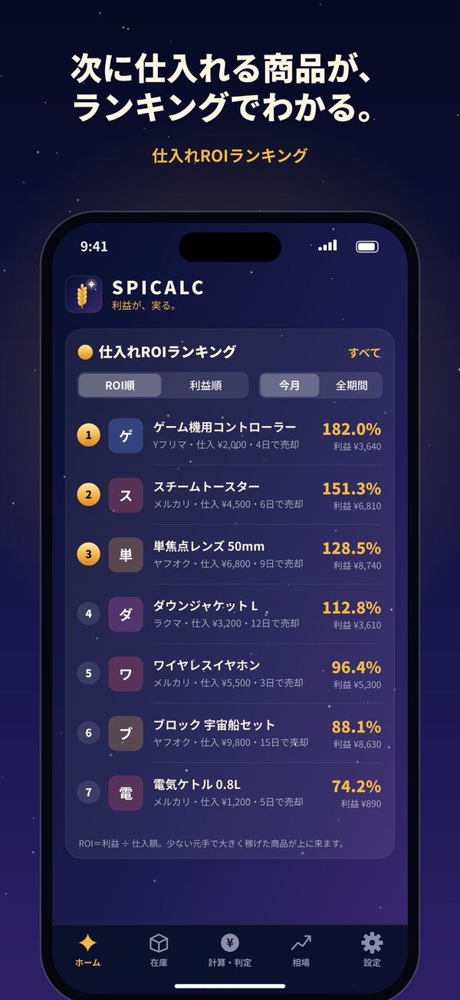
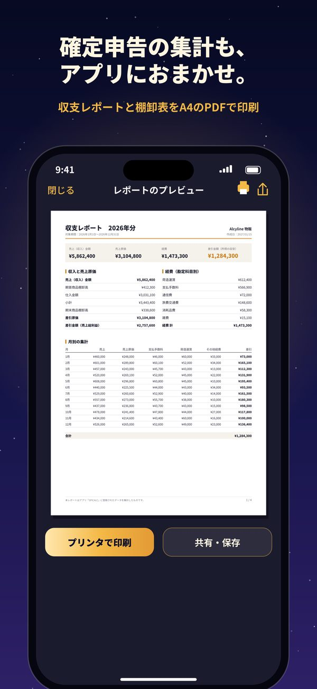
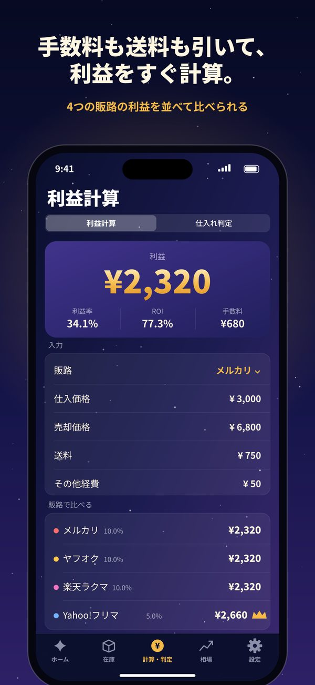
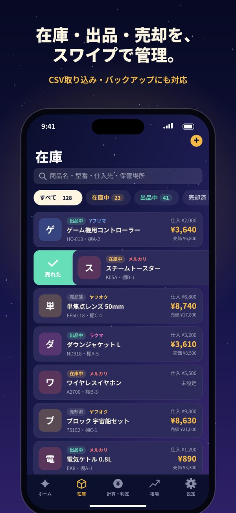

せどり・フリマ物販のための iPhone / iPad アプリ
仕入れも、値下げも、
仕入れも、値下げも、
迷わない。
仕入れ値と相場を入れるだけで「買い・検討・見送り」を判定。売れ残った在庫には、赤字にならない値下げ価格を提案します。年末は、確定申告用の収支レポートをPDFで印刷。
基本機能は無料。Pro は1週間無料で試せます。


仕入れ値と相場を入れるだけで「買い・検討・見送り」を判定。売れ残った在庫には、赤字にならない値下げ価格を提案します。年末は、確定申告用の収支レポートをPDFで印刷。
基本機能は無料。Pro は1週間無料で試せます。


記録をつけるだけのアプリではなく、「次にどうするか」を決めるためのアプリです。
相場と過去の売れ行きから、買うかどうかを判定。
写真つきで登録。CSV でまとめて取り込みも。
決めた日数で通知。赤字にならない値下げ提案。
収支レポートと棚卸表を PDF で印刷。
競合アプリにはあまりない「判断を手伝う機能」を中心に作りました。
仕入れ値・相場・コンディション・売れやすさから「買い」「検討」「見送り」を判定します。過去に登録した商品の利益率や売れるまでの日数、相場メモも参考にします。
仕入れから一定の日数たっても売れていない在庫を、3段階で朝9時に通知します。日数と値下げ率は自分で決められます（初期値は30・60・90日／5・10・15%）。値下げの価格は、赤字にならない下限より下げずに提案します。
「利益5,000円・ROI150%」のように、少ない元手で大きく稼げた商品を自動でランキング。今月と全期間で切り替えられ、次に仕入れるべき商品がわかります。

年間の売上・売上原価（期首・期末の棚卸）・経費を勘定科目ごとに集計。月別の集計表、売却明細、期末の棚卸表、経費の明細を A4 の PDF にして、そのままプリンタで印刷できます。月次レポートもあります。
収支内訳書や青色申告決算書に書き写すときの資料としてお使いください。

仕入価格・売却価格・送料を入れるだけで、販売手数料を引いた利益・利益率・ROI をすぐ表示。販路ごとの利益を並べて比べたり、ほしい利益から売価を逆算したりできます。販路は自由に追加・削除でき、手数料率も設定できます。

商品名・型番・仕入先・保管場所・写真をまとめて記録。「在庫中」「出品中」「売却済」をスワイプで切り替えられます。ほかのアプリや Excel の記録は CSV でまとめて取り込めて、データはファイルにバックアップできます。

まずは無料で。Pro は1週間無料で、すべての機能を試せます。
¥0
¥7,000 / 年（月あたり約583円）
1年ごとに自動更新されます。更新日の24時間前までに解約しない限り、Apple ID に請求されます。解約は「設定」＞ Apple ID ＞「サブスクリプション」からいつでもできます。
すべてお使いの iPhone / iPad の中に保存され、外部のサーバーには送信しません。機種変更の前に「設定」＞「バックアップを書き出す」で控えを作っておくと、新しい端末で復元できます。
メルカリ・ヤフオク・楽天ラクマ・Yahoo!フリマの販売手数料で利益を計算できます。手数料率は設定で変更できます。各サービスのアカウントと連携する機能はありません。
収支レポートは、登録したデータを集計した資料です。収支内訳書や青色申告決算書に書き写すときにお使いください。申告の内容は、税務署や税理士の案内に沿ってご確認ください。
ほかの売上管理アプリや Excel の記録を CSV で書き出せば、「CSVから取り込む」でまとめて取り込めます。列の見出しから中身を自動で判断します。
現在は iPhone / iPad 版のみです。